Fundamentos de las bases de datos orientadas a grafos
1 Introducción
Hasta ahora hemos estudiado tres modelos principales de bases de datos NoSQL:
- Bases de datos documentales, utilizando MongoDB.
- Bases de datos clave–valor, utilizando Redis.
- Bases de datos de familias de columnas, utilizando Apache Cassandra.
Cada modelo organiza y consulta información de una manera diferente. Ahora estudiaremos un cuarto modelo: las bases de datos orientadas a grafos.
A diferencia de los modelos anteriores, estas bases se enfocan especialmente en representar y consultar las relaciones entre los datos.
Pensemos en una red social donde las personas siguen a otras personas.
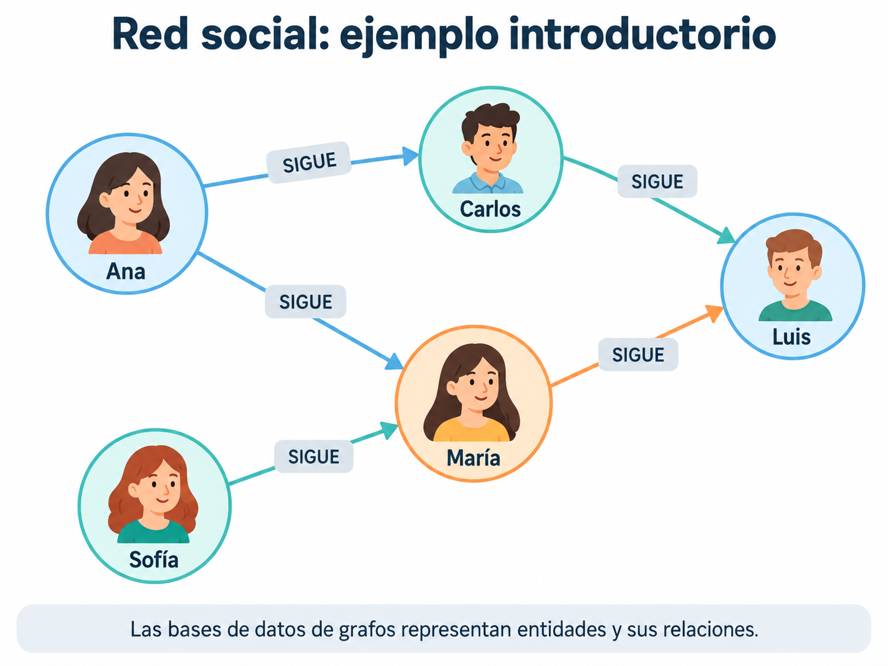
Como podemos observar en la Figure 1, no solamente interesa almacenar el nombre de cada persona. También queremos responder preguntas como:
- ¿A quién sigue Ana?
- ¿Qué personas siguen a Luis?
- ¿Qué contactos tienen en común dos usuarios?
- ¿A quién podríamos recomendar seguir?
Para responderlas necesitamos conocer las conexiones entre las entidades.
En una base de datos orientada a grafos, las relaciones entre los datos son parte fundamental del modelo.
Este enfoque resulta especialmente útil cuando necesitamos explorar conexiones, identificar patrones o recorrer relaciones entre entidades.
En este apunte estudiaremos sus fundamentos.
Posteriormente utilizaremos Neo4j y el lenguaje Cypher para construir grafos y realizar consultas.
2 ¿Qué es un grafo?
Un grafo es una estructura matemática utilizada para representar elementos y las conexiones que existen entre ellos.
Sus dos componentes fundamentales son:
- Vértices o nodos: representan elementos.
- Aristas o relaciones: representan conexiones entre esos elementos.
Imaginemos tres personas:
Ana ───── Carlos ───── MaríaCada persona es un nodo; cada línea es una conexión.
En un sistema real los nodos podrían representar personas, ciudades, productos, películas, dispositivos o artículos académicos.
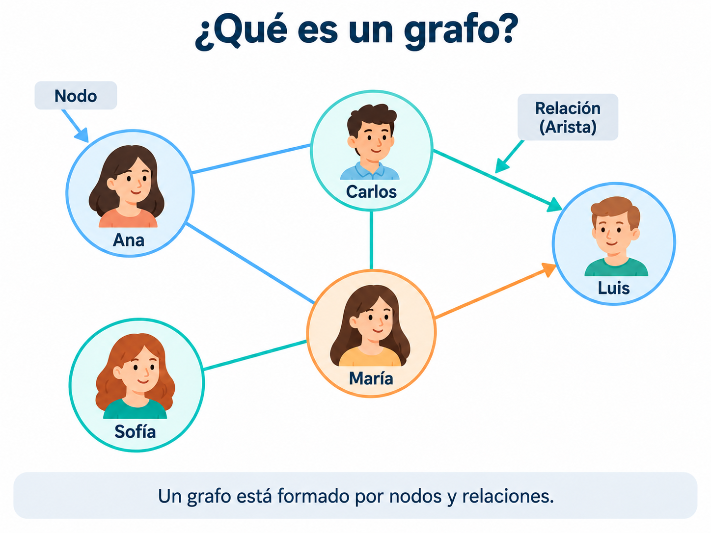
La Figure 2 permite identificar visualmente un nodo y una relación.
Los grafos se utilizan en:
- Redes sociales.
- Rutas de transporte.
- Redes de comunicación.
- Sistemas de recomendaciones.
- Relaciones familiares o académicas.
- Redes de conocimiento.
Una tabla puede responder:
¿Cuáles son los datos de Ana?
Un grafo facilita representar otra pregunta:
¿Cómo está conectada Ana con María?
3 Elementos de una base de datos orientada a grafos
Para comprender el modelo estudiaremos tres elementos principales:
NODOS
+
RELACIONES
+
PROPIEDADES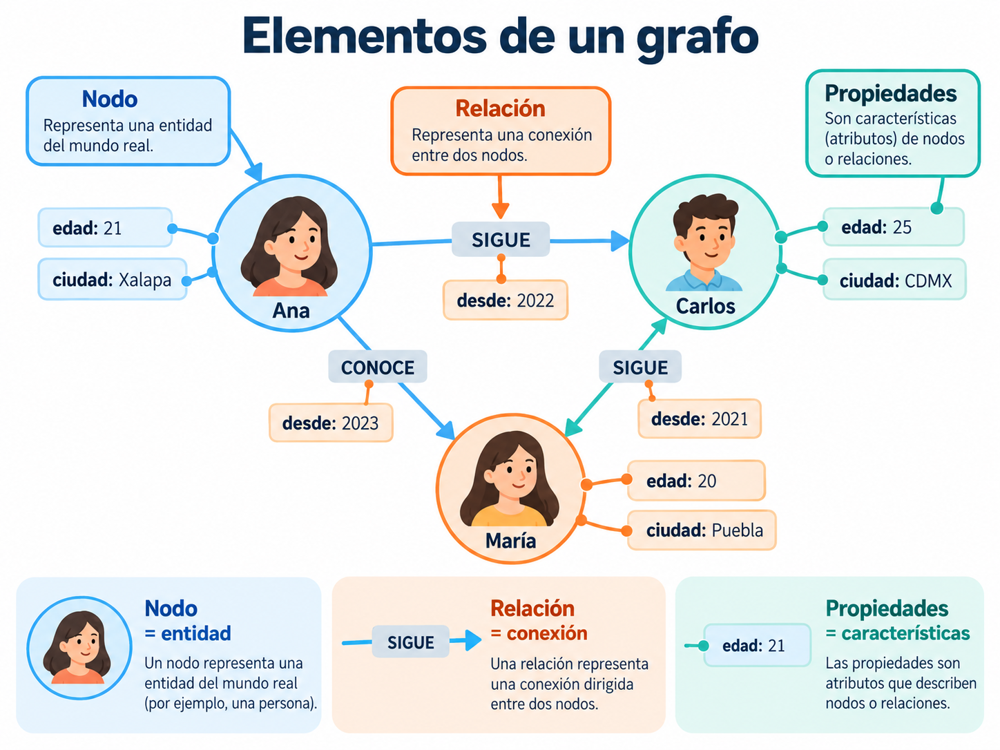
3.1 Nodos
Los nodos representan entidades dentro del sistema.
Por ejemplo:
(Ana) (Carlos) (María)En un sistema universitario podríamos representar:
(Estudiante) (Profesor) (Materia)Los nodos representan elementos identificables.
No indican por sí solos qué relación mantienen con otros elementos.
3.2 Relaciones
Las relaciones conectan nodos y describen el tipo de conexión:
(Ana) ─── CONOCE ───> (Carlos)
(Ana) ─── CURSA ────> (Bases de Datos)Por lo tanto, una relación contiene significado: no es solamente una línea entre entidades.
3.3 Propiedades
Las propiedades son atributos que describen nodos o relaciones.
Por ejemplo:
Ana
├── edad: 21
├── ciudad: Xalapa
└── carrera: Ciencia de DatosUna relación también puede tener propiedades:
(Ana) ─── CONOCE ───> (Carlos)
│
└── desde: 2022- Nodos: entidades.
- Relaciones: conexiones.
- Propiedades: características de nodos o relaciones.
4 Etiquetas y tipos de relaciones
En una base de grafos como Neo4j, los nodos pueden clasificarse mediante etiquetas:
Persona
Estudiante
Profesor
Materia
UniversidadUn mismo nodo puede tener más de una etiqueta.
Por ejemplo, Ana podría ser al mismo tiempo una persona y una estudiante:
(:Persona:Estudiante)Las relaciones también tienen tipos, como:
SIGUE
CONOCE
CURSA
IMPARTE
COMPRÓ
PERTENECE_APor ejemplo:
(Ana:Estudiante)
│
│ CURSA
↓
(Bases de Datos:Materia)Este ejemplo muestra que las etiquetas describen qué son los nodos, mientras que los tipos de relación describen cómo se conectan.
5 Grafos dirigidos y no dirigidos
Las conexiones entre nodos no siempre se interpretan de la misma manera.
En teoría de grafos distinguimos principalmente entre grafos dirigidos y no dirigidos.
5.1 Grafo dirigido
En un grafo dirigido, las conexiones tienen una dirección:
Ana ─── SIGUE ───> CarlosSignifica que Ana sigue a Carlos, pero no implica que Carlos siga a Ana.
Este tipo de conexión aparece en redes sociales donde los usuarios pueden seguir a otras personas sin que exista necesariamente una relación recíproca.
5.2 Grafo no dirigido
En un grafo no dirigido, las conexiones no tienen una dirección:
Ana ───── CarlosEsto podría representar una amistad mutua o una conexión física, siempre que esa interpretación corresponda al problema.
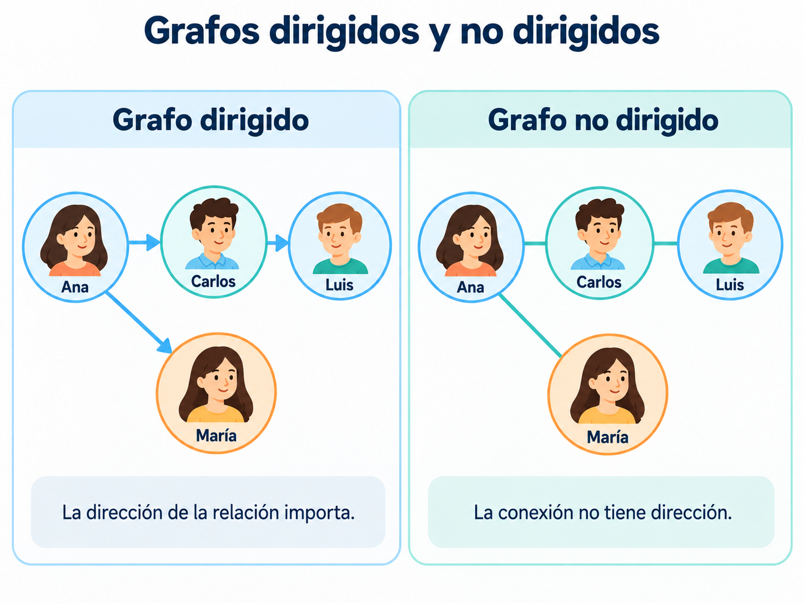
La Figure 4 permite observar la diferencia entre ambos tipos de conexiones.
En Neo4j las relaciones almacenadas tienen dirección, pero sus consultas permiten buscar patrones sin exigir un sentido determinado.
Un grafo no dirigido, como concepto matemático, no es exactamente lo mismo que una consulta que ignora la dirección.
7 Relaciones directas e indirectas
Una relación directa conecta dos nodos mediante una sola arista.
Por ejemplo:
Ana ───> CarlosUna conexión indirecta se establece mediante nodos intermedios.
Por ejemplo:
Ana ───> Carlos ───> LuisAna puede llegar a Luis por medio de Carlos.
También existe otro camino:
Ana ───> María ───> Luis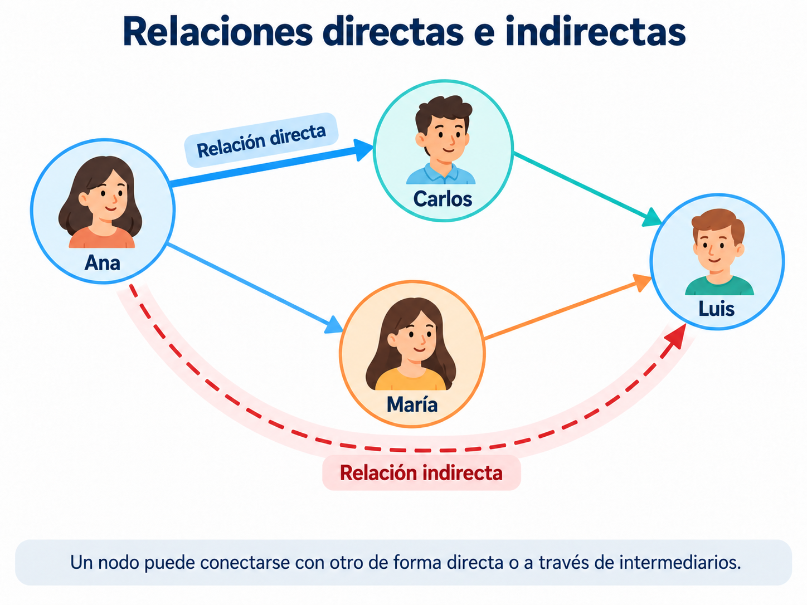
7.1 ¿Qué es un camino?
Un camino es una secuencia de nodos conectados mediante relaciones.
En el ejemplo:
Ana → Carlos → Luisel recorrido contiene dos relaciones, por lo que tiene longitud 2 si medimos su longitud por el número de aristas.
En un mismo grafo pueden existir diferentes caminos para conectar dos nodos.
Las relaciones directas permiten consultar vecinos inmediatos.
Los caminos permiten explorar conexiones indirectas a través de uno o varios intermediarios.
8 Recorridos de grafos
Un recorrido consiste en explorar nodos y relaciones siguiendo determinadas condiciones.
Por ejemplo, partimos de Ana:
Ana ───> Carlos ───> Luis
└────> María ─────> SofíaPodemos identificar dos niveles.
Primer nivel:
Carlos
MaríaSon los nodos que se encuentran a una relación de Ana.
Segundo nivel:
Luis
SofíaSon los nodos a los que llegamos mediante dos relaciones.
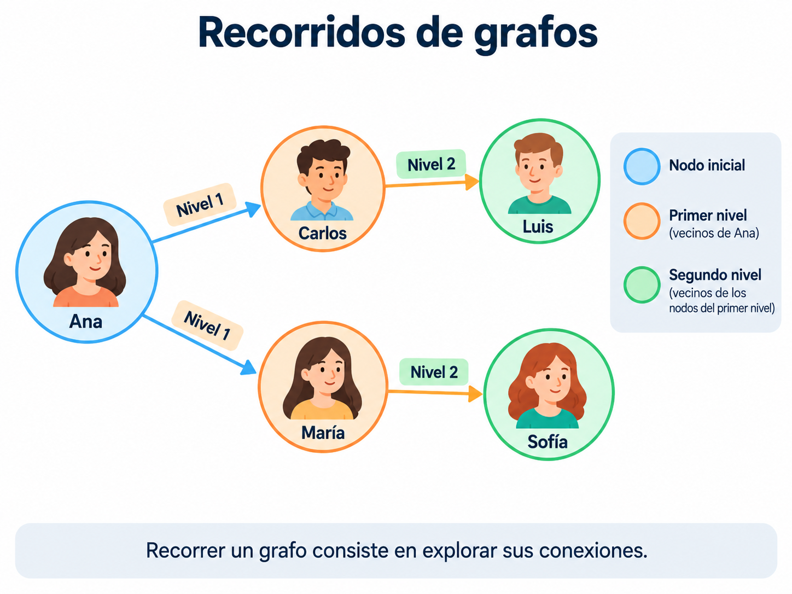
Los recorridos pueden servir para:
- Identificar contactos indirectos.
- Explorar redes de conocimiento.
- Encontrar conexiones entre personas.
- Analizar rutas y redes de transporte.
- Buscar patrones en sistemas de recomendaciones.
Una base de grafos permite consultar no solamente las propiedades de un nodo, sino también sus relaciones y las conexiones que pueden recorrerse a partir de él.
9 Comparación con una base de datos relacional
Pensemos nuevamente en una red social.
En el modelo relacional podríamos almacenar personas en una tabla.
9.1 Tabla usuarios
| id_usuario | nombre |
|---|---|
| 1 | Ana |
| 2 | Carlos |
| 3 | María |
| 4 | Luis |
Para representar los seguimientos podríamos usar otra tabla.
9.2 Tabla seguimientos
| usuario_origen | usuario_destino |
|---|---|
| 1 | 2 |
| 1 | 3 |
| 2 | 4 |
| 3 | 4 |
La primera fila significa que Ana sigue a Carlos.
Esta representación es válida y útil.
En un modelo de grafos, las conexiones se representan explícitamente mediante relaciones entre nodos.
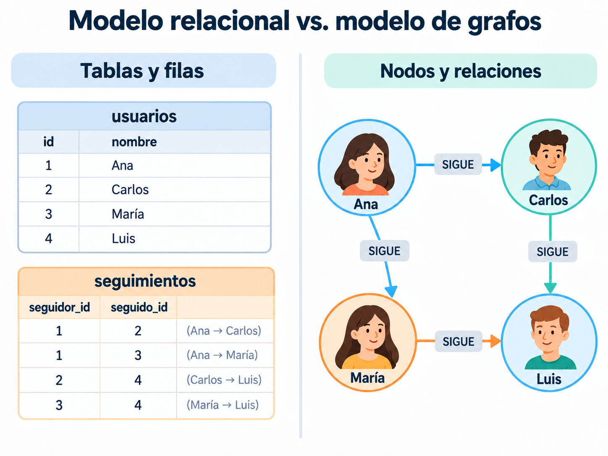
| Característica | Modelo relacional | Modelo de grafos |
|---|---|---|
| Organización | Tablas | Nodos y relaciones |
| Entidades | Filas | Nodos |
| Conexiones | Llaves y tablas relacionadas | Relaciones explícitas |
| Atributos | Columnas | Propiedades |
| Lenguaje habitual | SQL | Cypher, entre otros |
| Consultas de varios niveles | JOIN y consultas recursivas |
Recorridos y patrones |
| Gestor de ejemplo | PostgreSQL | Neo4j |
Las bases de datos relacionales también permiten consultar relaciones complejas y realizar consultas recursivas.
Los grafos no reemplazan automáticamente a las bases relacionales.
La ventaja depende del problema y de las consultas que se necesitan realizar.
10 Comparación con una base documental
MongoDB permite almacenar referencias o información incrustada.
Por ejemplo:
{
nombre: "Ana",
edad: 21,
siguiendo: ["Carlos", "María"]
}Ese documento permite conocer a quién sigue Ana.
Pero si queremos saber a quiénes siguen Carlos y María, necesitamos recuperar información adicional.
En un grafo podemos representar las conexiones directamente:
Ana ───> Carlos ───> Luis
└────> María ─────> Luis| Modelo documental | Modelo de grafos |
|---|---|
| Documentos con campos y valores | Nodos con propiedades |
| Información incrustada o referenciada | Conexiones explícitas |
| Consultas de documentos | Consultas de patrones y recorridos |
| Ejemplo: MongoDB | Ejemplo: Neo4j |
El modelo documental puede ser adecuado cuando almacenamos información que se consulta junta.
El modelo de grafos puede ser más conveniente cuando el interés principal es recorrer y analizar conexiones entre entidades.
11 Ejemplo: sistema de recomendaciones de películas
Una plataforma de streaming podría representar usuarios, películas y géneros como nodos.
Imaginemos que:
- Ana vio las películas A y B.
- Carlos vio las películas A y C.
- La película A y la C pertenecen a Ciencia ficción.
- La película B pertenece a Drama.
Podemos representarlo así:
Ana ── VIO ──> Película A <── VIO ── Carlos
│ │
└── VIO ───> Película B │
│
VIO│
↓
Película C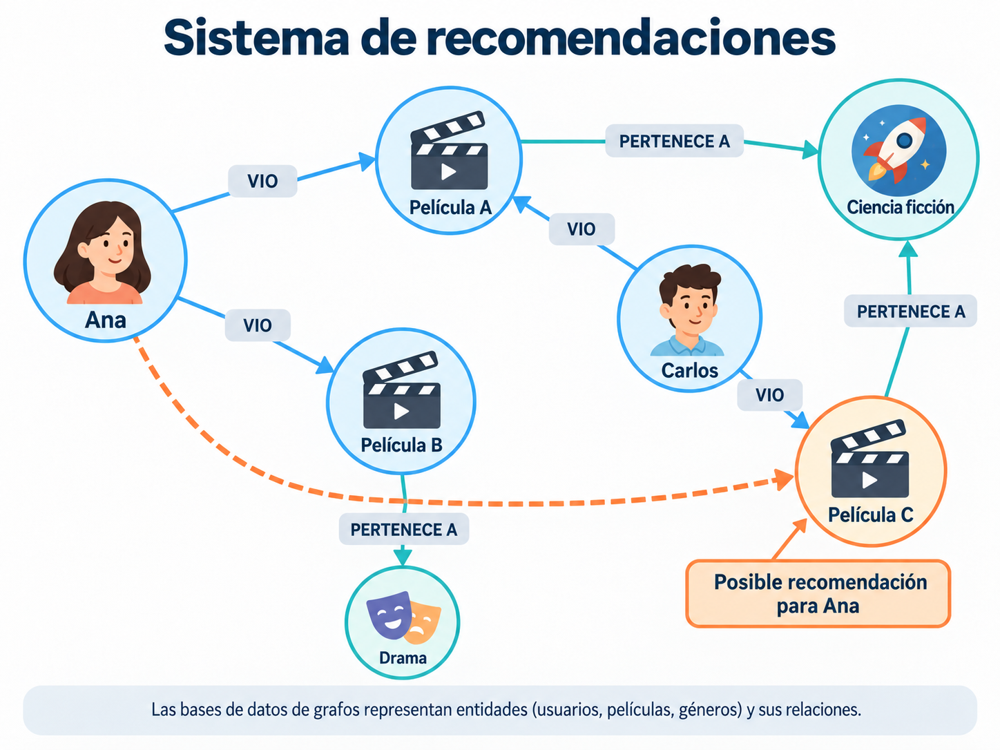
En este ejemplo, la película C podría considerarse una recomendación candidata para Ana porque Carlos la vio y ambos comparten el antecedente de haber visto la película A.
Las relaciones también permiten explorar:
- Películas vistas por usuarios con intereses comunes.
- Películas que pertenecen al mismo género.
- Usuarios que comparten contenidos.
- Recomendaciones potenciales.
El hecho de compartir una película no garantiza que dos usuarios tengan los mismos gustos.
En una aplicación real conviene combinar las conexiones con otros datos y criterios.
12 Ejemplo: rutas de transporte
Los grafos también permiten representar redes de transporte.
Por ejemplo:
Xalapa ───── Veracruz
│ │
│ │
Puebla ─── Ciudad de MéxicoCada ciudad representa un nodo y cada conexión representa una ruta.
Las relaciones pueden contener propiedades como:
distancia
tiempo
costoPor ejemplo, imaginemos datos ficticios:
Ciudad A ─── 10 km ─── Ciudad B
Ciudad B ─── 15 km ─── Ciudad CSi una conexión tiene un valor numérico asociado, hablamos de un grafo ponderado.
Con los pesos podemos estudiar caminos que minimicen distancia, tiempo o costo.
En un grafo ponderado, las aristas tienen valores numéricos llamados pesos.
El significado de esos valores depende del problema.
13 Ejemplo: relaciones académicas
Imaginemos una universidad con estudiantes, docentes y materias:
Ana ───── CURSA ─────> Bases de Datos
Luis ──── CURSA ─────> Bases de Datos
Carlos ── IMPARTE ───> Bases de DatosLas entidades podrían ampliarse para incluir:
facultades
programas educativos
proyectos
áreas de investigaciónCon este grafo podríamos preguntar:
- ¿Qué materias cursa una persona?
- ¿Quién imparte cierta materia?
- ¿Qué estudiantes comparten materias?
- ¿Qué docentes colaboran en un proyecto?
- ¿Qué programas educativos comparten asignaturas?
Este ejemplo muestra cómo un grafo permite integrar diferentes entidades alrededor de sus relaciones.
14 Grafos y Ciencia de Datos
Representar información como red permite analizar características de su estructura.
14.2 Sistemas de recomendación
Pueden utilizar conexiones entre usuarios, productos, películas e intereses para identificar candidatos a recomendar.
14.3 Detección de comunidades
Consiste en identificar grupos de nodos con determinados patrones de conexión.
Por ejemplo, dentro de una red social podrían existir conjuntos de personas que interactúan con mayor frecuencia entre sí.
14.4 Detección de patrones inusuales
En redes de cuentas, transacciones o dispositivos pueden estudiarse conexiones poco frecuentes o inusuales como parte de un análisis de anomalías.
14.5 Redes de conocimiento
Podemos representar relaciones entre publicaciones, autores y conceptos:
Artículo A ─── CITA ───> Artículo B
Artículo B ─── CITA ───> Artículo CEsta representación puede utilizarse para analizar redes de citas académicas.
15 Conceptos básicos del análisis de grafos
15.1 Grado de un nodo
El grado es la cantidad de aristas incidentes a un nodo en un grafo no dirigido.
Carlos
|
|
Ana ─── María ─── LuisEn este ejemplo, María tiene grado 3.
En grafos dirigidos se distingue entre:
- Grado de entrada: cantidad de relaciones que llegan al nodo.
- Grado de salida: cantidad de relaciones que salen del nodo.
Por ejemplo:
Ana ───> María
Luis ───> María
María ──> CarlosMaría tiene:
grado de entrada = 2
grado de salida = 115.2 Caminos más cortos
Se busca un camino mínimo entre dos nodos según el criterio elegido.
Si todas las relaciones tienen el mismo costo, podemos minimizar la cantidad de aristas.
Si existen pesos, podemos buscar el menor costo total.
15.3 Centralidad
La centralidad reúne diferentes medidas que describen la posición o importancia estructural de un nodo en una red.
Algunas consideran:
- La cantidad de conexiones.
- Las distancias hacia otros nodos.
- Su participación en caminos.
- Las conexiones con otros nodos importantes.
No existe una única medida adecuada para todos los problemas.
15.4 Comunidades
Son grupos de nodos que muestran patrones de conexión relativamente más intensos entre sus integrantes, según el criterio o algoritmo utilizado.
Por ejemplo, en una red social puede haber grupos de personas con numerosos vínculos dentro de cada grupo y menos conexiones entre grupos diferentes.
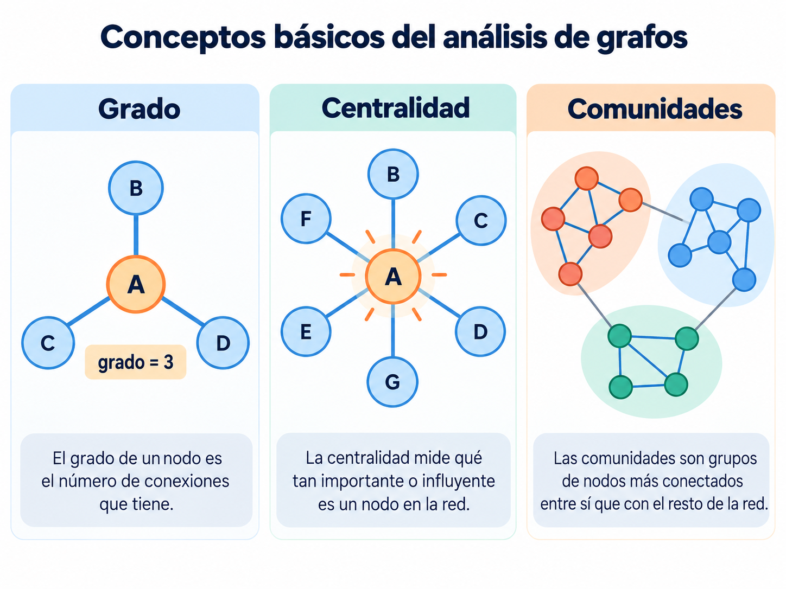
Una base de grafos permite almacenar y consultar conexiones.
Posteriormente, técnicas de análisis de redes permiten estudiar caminos, centralidad, comunidades y otros patrones.
16 Ventajas del modelo de grafos
Entre las principales ventajas podemos mencionar:
- Representa explícitamente las relaciones entre entidades.
- Facilita modelar redes de información.
- Permite recorrer conexiones directas e indirectas.
- Facilita consultas basadas en patrones de relaciones.
- Representa diferentes tipos de nodos y conexiones.
- Resulta útil en recomendaciones, rutas y análisis de redes.
Estas ventajas deben evaluarse siempre en función del problema.
17 Limitaciones y consideraciones
También existen limitaciones:
- No todas las aplicaciones requieren explorar relaciones complejas.
- Algunas consultas tabulares son más naturales en una base relacional.
- Los recorridos muy amplios pueden utilizar muchos recursos.
- El rendimiento depende de la estructura y el tamaño del grafo.
- Distribuir grafos entre varios servidores puede introducir retos adicionales.
- Los nodos y relaciones necesitan un diseño adecuado.
Una base de datos orientada a grafos no es automáticamente mejor que una relacional, documental o clave–valor.
Debemos elegirla en función de las consultas y las relaciones que realmente necesitamos.
18 Neo4j como ejemplo de base de datos de grafos
Neo4j es uno de los gestores más conocidos de bases de datos orientadas a grafos.
Utiliza un modelo denominado grafo de propiedades (property graph).
Permite representar:
nodos
relaciones
etiquetas
tipos de relaciones
propiedadesPor ejemplo:
(Ana:Persona) ─── SIGUE ───> (Carlos:Persona)18.1 Lenguaje Cypher
Neo4j utiliza Cypher, un lenguaje que describe patrones mediante una sintaxis parecida a la representación visual de los grafos.
Por ejemplo, el siguiente patrón representa una conexión; todavía no es una instrucción completa para crearla:
(ana)-[:SIGUE]->(carlos)Los paréntesis representan nodos:
()Los corchetes describen relaciones:
[]Y la flecha indica la dirección:
-[]->En el próximo tema utilizaremos instrucciones como:
CREATE
MATCH
RETURN
WHERE
SET
DELETEpara trabajar directamente con Neo4j.
19 Comparación de los cuatro modelos NoSQL
Hasta ahora hemos estudiado los cuatro modelos principales de bases de datos NoSQL.
| Modelo | Organización principal | Tecnología estudiada |
|---|---|---|
| Documental | Documentos con campos y valores | MongoDB |
| Clave–valor | Claves asociadas con valores | Redis |
| Familias de columnas | Tablas, particiones y columnas | Cassandra |
| Grafos | Nodos, relaciones y propiedades | Neo4j (siguiente práctica) |
19.1 Modelo documental
Útil para documentos con estructuras anidadas y atributos variables.
19.2 Modelo clave–valor
Conveniente cuando conocemos la clave y necesitamos recuperar o actualizar rápidamente un valor.
19.3 Modelo de familias de columnas
Adecuado para ciertos escenarios de gran volumen de información distribuida y consultas orientadas por claves de partición.
19.4 Modelo de grafos
Especialmente útil cuando debemos explorar y analizar conexiones entre entidades.
No existe un único modelo adecuado para todos los problemas.
La elección depende de:
- La estructura de los datos.
- Las relaciones existentes.
- Las consultas necesarias.
- El volumen de información.
- Los requisitos de rendimiento.
- La distribución y escalabilidad.
20 Ejemplo integrado: una plataforma digital
Imaginemos una aplicación que registra usuarios, muestra películas, administra sesiones, almacena actividad y recomienda contenido.
Podríamos considerar diferentes modelos de almacenamiento.
MongoDB podría almacenar:
Perfiles de usuarios
Información de películas
MetadatosRedis podría utilizarse para:
Sesiones
Caché
ContadoresCassandra podría conservar:
Historiales de reproducción
Eventos generados continuamente
Registros de actividadNeo4j podría modelar:
Relaciones entre usuarios
Intereses compartidos
Relaciones entre contenidos
Candidatos para recomendacionesEsta combinación es conceptual.
En aplicaciones reales hace falta diseñar cómo se comunican los sistemas y cómo mantienen la información coherente.
La utilización de diferentes tecnologías de almacenamiento se relaciona con la persistencia políglota.
21 Actividad de autoevaluación
Relaciona cada situación con un concepto del tema.
| Situación | Concepto |
|---|---|
| Una persona dentro de una red social | ___ |
| La conexión entre dos personas | ___ |
| La edad almacenada de una persona | ___ |
| Ana sigue a Carlos, pero Carlos no necesariamente sigue a Ana | ___ |
| Ana está conectada con Luis mediante Carlos | ___ |
| Explorar conexiones a partir de un usuario | ___ |
| Cantidad de aristas incidentes a un nodo en un grafo no dirigido | ___ |
| Encontrar grupos de usuarios relacionados | ___ |
| Lenguaje utilizado para consultar Neo4j | ___ |
| Gestor de bases de datos de grafos | ___ |
- Nodo.
- Relación.
- Propiedad.
- Relación dirigida.
- Camino o conexión indirecta.
- Recorrido.
- Grado.
- Comunidades.
- Cypher.
- Neo4j.
22 Preguntas para reflexionar
¿Qué diferencia existe entre un nodo y una relación?
¿Por qué las conexiones tienen tanta importancia en una base de grafos?
¿Qué es una propiedad y dónde puede almacenarse?
¿Cuál es la diferencia entre un grafo dirigido y uno no dirigido?
¿Qué diferencia existe entre una conexión directa y una indirecta?
¿Qué significa recorrer un grafo?
¿Cómo podría usarse un grafo para recomendar personas dentro de una red social?
¿Qué diferencias hay entre representar relaciones mediante tablas y mediante grafos?
¿En qué situaciones podría convenir MongoDB en lugar de Neo4j?
¿Qué aplicaciones de grafos identificas dentro de Ciencia de Datos?
¿Qué representa el grado de un nodo?
¿Por qué una base de grafos no es necesariamente la mejor opción para cualquier sistema?
23 Ideas clave
Los nodos representan entidades y las relaciones representan sus conexiones.
Ambos pueden almacenar propiedades.
Una relación dirigida distingue quién inicia y quién recibe una conexión.
Las relaciones no dirigidas no presentan ese sentido.
Podemos estudiar conexiones inmediatas, caminos indirectos y diferentes niveles de relación.
Permiten estudiar recomendaciones, redes sociales, rutas, comunidades, centralidad y redes de conocimiento.
Neo4j organiza la información mediante nodos y relaciones.
Cypher permite describir y consultar patrones.
MongoDB, Redis, Cassandra y Neo4j responden a diferentes necesidades.
La elección debe basarse en el tipo de información y en las consultas que realizará la aplicación.
24 De los grafos sencillos a las redes complejas
Hasta ahora hemos trabajado con ejemplos relativamente pequeños para comprender los principales elementos de las bases de datos orientadas a grafos.
En nuestros primeros ejemplos utilizamos cuatro o cinco personas para identificar nodos, relaciones, propiedades y recorridos.
Sin embargo, en aplicaciones reales podemos encontrar grafos mucho más grandes, donde existen diferentes tipos de entidades y numerosas conexiones.
Por ejemplo, una red podría integrar:
- Personas.
- Empresas.
- Libros.
- Temas de interés.
- Proyectos.
- Eventos.
- Herramientas tecnológicas.
- Organizaciones.
En este tipo de escenario, no solamente interesa conocer las características de cada entidad, sino también descubrir cómo se relacionan entre sí.
24.1 Ejemplo de un grafo más complejo
Imaginemos una aplicación que almacena información sobre personas, libros, empresas y áreas de conocimiento.
En ella podríamos registrar relaciones como:
Ana ─── TRABAJA_EN ───> TechSolutions
Carlos ─── AUTOR_DE ───> Bases de Datos Modernas
María ─── AUTOR_DE ───> Diseño de Software
TechSolutions ─── DESARROLLA ───> Plataforma de Análisis
Plataforma de Análisis ─── UTILIZA ───> Neo4jEstas relaciones pueden formar parte de una misma red.
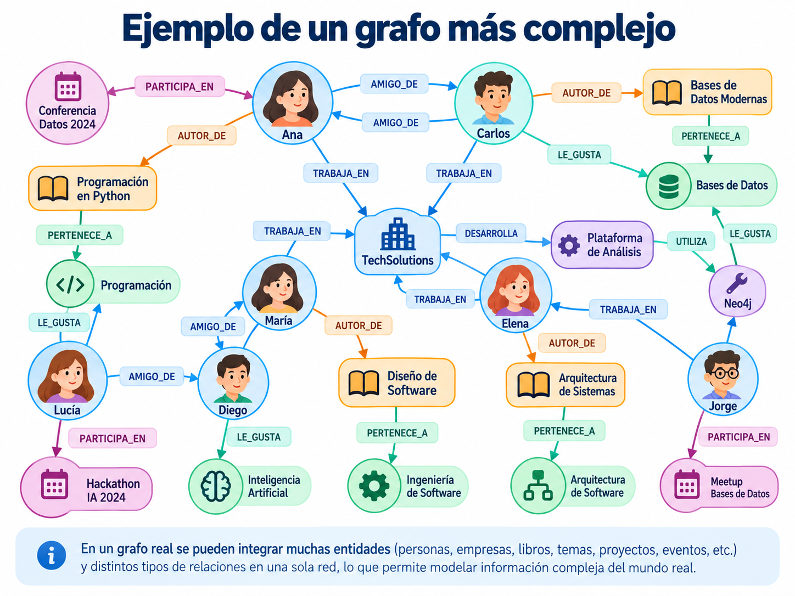
En la Figure 11 observamos que los nodos representan diferentes tipos de entidades.
También encontramos distintas relaciones, como:
AMIGO_DE: conecta personas.TRABAJA_EN: conecta personas con empresas.AUTOR_DE: conecta personas con libros.LE_GUSTA: relaciona personas con temas de interés.DESARROLLA: conecta organizaciones con proyectos.UTILIZA: relaciona proyectos con herramientas.
A partir de esta estructura podríamos responder preguntas como:
- ¿Qué personas trabajan en la misma empresa?
- ¿Qué libros escribieron los empleados de determinada organización?
- ¿Qué temas de interés comparten dos personas?
- ¿Qué proyectos utilizan una herramienta específica?
- ¿Qué conexiones existen entre una persona y determinado libro?
Este ejemplo permite observar que un grafo puede integrar diferentes tipos de información dentro de una sola estructura.
La principal característica del modelo de grafos no es solamente que pueda almacenar diferentes entidades.
Su valor está en permitir representar y explorar las relaciones que existen entre ellas.
24.2 ¿Qué sucede cuando una red crece?
Ahora imaginemos que nuestra aplicación deja de trabajar con unas cuantas personas y comienza a almacenar información sobre miles de usuarios, organizaciones, proyectos y áreas de conocimiento.
Cada nuevo elemento puede agregar:
nuevos nodos
+
nuevas relaciones
↓
una red más grandePor ejemplo, una plataforma podría contener:
10,000 usuarios
2,000 proyectos
500 organizaciones
1,000 temas de interésEstos valores son únicamente ilustrativos.
Además, un mismo usuario podría relacionarse con numerosos proyectos, organizaciones y temas.
Como consecuencia, la red podría contener una cantidad mucho mayor de conexiones que de entidades.
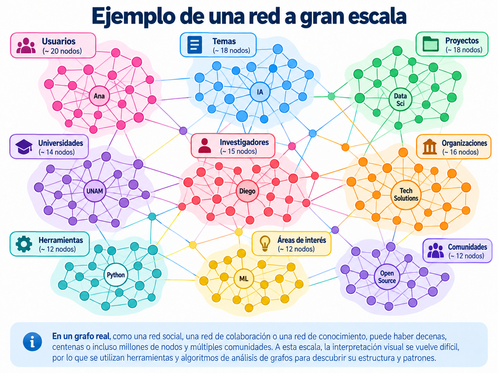
En la Figure 12 podemos observar una red más grande donde los nodos aparecen agrupados en diferentes conjuntos.
Cada grupo representa conceptualmente un conjunto de entidades relacionadas, como:
- Usuarios.
- Universidades.
- Investigadores.
- Proyectos.
- Organizaciones.
- Herramientas.
- Áreas de interés.
Algunos nodos mantienen numerosas conexiones dentro de su propio grupo.
Otros permiten conectar diferentes grupos de la red.
Esta estructura puede estudiarse mediante técnicas de análisis de grafos para identificar comunidades y patrones de conexión.
Cuando tenemos cientos, miles o millones de nodos, visualizar todas las conexiones al mismo tiempo puede resultar poco práctico.
Por ello, las bases de datos de grafos permiten realizar consultas específicas y recuperar únicamente una parte de la información.
No siempre necesitamos visualizar toda la red para responder una pregunta.
24.3 Explorar solamente una parte del grafo
Supongamos que nuestra red contiene una gran cantidad de personas, empresas, proyectos y libros.
Sin embargo, queremos responder una pregunta concreta:
¿Con qué entidades está relacionada Ana?
Para ello no necesitamos analizar visualmente todas las conexiones de la red.
Podemos comenzar desde el nodo que representa a Ana y explorar sus relaciones.
Por ejemplo:
Ana
│
┌─────────┼─────────┐
│ │ │
Carlos María TechSolutions
│ │ │
↓ ↓ ↓
Libro Tema ProyectoEn este caso distinguimos dos niveles de conexiones.
Primer nivel: nodos conectados directamente con Ana.
Segundo nivel: nodos a los que podemos llegar mediante una entidad intermedia.
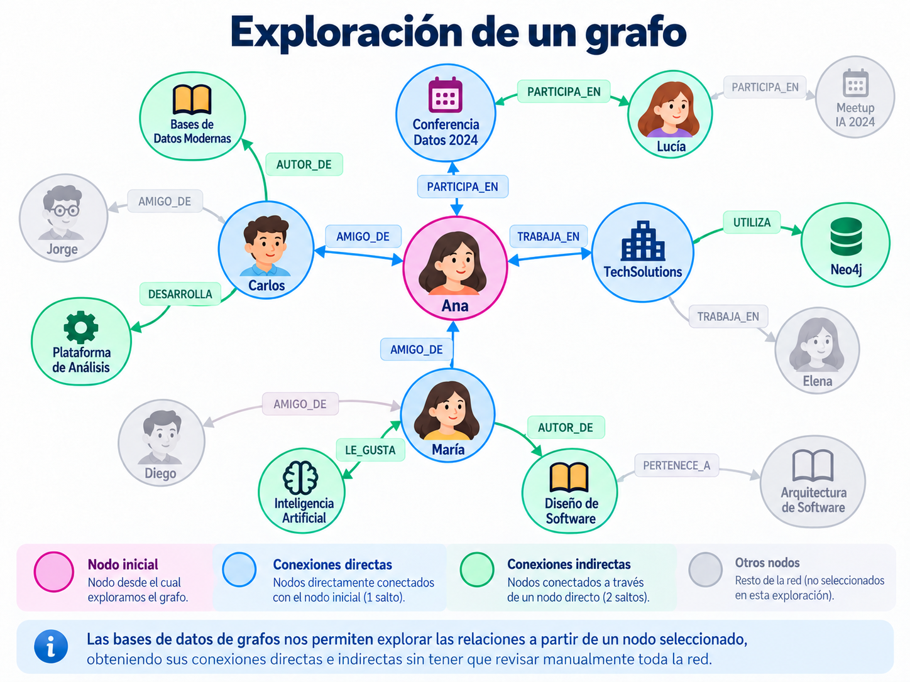
En la Figure 13 podemos observar cómo algunas conexiones aparecen destacadas mientras que otras permanecen en segundo plano.
Esto permite concentrarnos en un nodo y en su entorno cercano.
Por ejemplo, una consulta podría buscar:
- Las personas relacionadas con Ana.
- Las organizaciones donde trabaja.
- Los eventos en los que participa.
- Los libros relacionados con sus contactos.
- Los proyectos conectados con su empresa.
Los recorridos permiten explorar una parte de la red a partir de un nodo inicial.
En lugar de revisar manualmente cientos de conexiones, podemos utilizar consultas para recuperar los nodos y relaciones que cumplen determinadas condiciones.
Esta es una de las principales razones por las que las bases de datos orientadas a grafos resultan útiles en sistemas donde las conexiones tienen especial importancia.